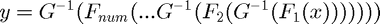
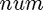
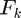
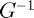
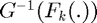

gaussianizationfactory
Construct a Gaussianization distribution structure
Syntax
D = gaussianization(LayerD, num) D = gaussianization(LayerD)
Description
D = gaussianization(LayerD, num) returns a structure representing a gaussianization distribution. LayerD is a distribution structure defining gaussianization layer distribution type, and num is the number gaussianization layers
D = gaussianization(LayerD) where LayerD is a cell array of distribution structures defined on the same data space, constructs a heterogeneous gaussianization distribution D where each layer may be of a different distribution type.
Distribution Parameters
- D (num-by-1 cell array of distribution parameter structures) : Contains the parameters for each layer.
Probability Density Function
The distribution is defined to be whitened Gaussian distribution in the transformed domain. The transformation is given by :

where  is the number oflayers,  represents the CDF of kth layer  is the inverse CDF of Gaussian. Note that  is computer together as Gaussianization for each layer
Example
% Construct a Gaussianization distribution of two layers D = % Build a parameter structure for it: theta{1} = theta{2} = % Plot the PDF: x = 0:0.1:10; y = 0:0.1:10; surf

For more detailes look at the following paper: Chen, S. S., & Gopinath, R. A. (2000). Gaussianization.
name
See distribution structure common members.
M
See distribution structure common members.
num
Number of layers
Syntax
num = D.num()
Description
num = D.num() returns the number of layers in the Gaussianization distribution D.
Note: You need to include the parentheses () for this to work.
layer
layer distributions
Syntax
D_k = D.layer(idx)
Description
D_k = D.layer(idx) where idx is the index of a layer, gives the layer distribution structure at idx.
D_k = D.layer(idx) where idx is an index vector with more than one element, returns a cell array of the distribution structures indexed in idx.
addlayer
Add a Gaussianization layer (to the variable layers)
Syntax
newD = D.addlayer(CmptD) [newD, newtheta] = D.addlayer(CmptD, theta, CmptTheta)
Description
newD = D.addlayer(CmptD) returns newD, a Gaussianization distribution with the same layers as D plus the new variable layer distribution CmptD.
[newD, newtheta] = D.addlayer(CmptD, theta, CmptTheta) also returns newtheta, the parameters for newD, given theta, the parameters for D, and CmptTheta, the parameters for CmptD.
removelayer
Remove a layer
Syntax
newD = D.removelayer(idx) [newD, newtheta] = D.removelayer(idx, theta)
Description
newD = D.removelayer(idx) returns newD, a Gaussianization distribution the same as D where the layer at index idx is removed from its layers.
[newD, newtheta] = D.removelayer(idx, theta) also returns newtheta, the parameters for newD, given theta, the parameters for D.
dim
See distribution structure common members.
datadim
See distribution structure common members.
ll
See distribution structure common members.
llvec
See distribution structure common members.
llgrad
See distribution structure common members.
llgraddata
See distribution structure common members.
cdf
See distribution structure common members.
See distribution structure common members.
sample
See distribution structure common members.
randparam
See distribution structure common members.
init
See distribution structure common members.
estimatedefault
Default estimation function for Gaussianization distribution. This function implements the expectation maximization (EM) method.
Syntax
theta = D.estimatedefault(data) theta = D.estimatedefault(data, options) [theta, D] = D.estimatedefault(...) [theta, D, info] = D.estimatedefault(...) [theta, D, info, options] = D.estimatedefault(...)
Description
theta = D.estimatedefault(data) returns estimated parameters for the distribution D, using data.
theta = D.estimatedefault(data, options) utilizes applicable options from the options structure in the estimation procedure.
[theta, D] = D.estimatedefault(...) also returns D, the distribution structure for which theta is applicable. (This is the same as the distribution structure D from which you called estimate, and so it should not normally be used. The purpose of including it in the output is to maintain compatibility with other estimation functions).
[theta, D, info] = D.estimatedefault(...) also returns info, a structure array containing information about successive iterations performed by iterative estimation functions.
[theta, D, info, options] = D.estimatedefault(...) also returns the effective options used, so you can see what default values the function used on top of the options you possibly specified.
For information about the output theta, see Distribution Parameters Structure. The input argument data is described in Data Input Argument to Functions. You may also want to read about options or info arguments.
Available Options
This function supports the following options from the options described in estimation options.
- theta0
- verbosity
- plotCost
- crossVal
- minIter
- maxIter
- maxTime
- tolCost
- tolCostDiff
- statsfun
- stopfun
Returned info fields
This function puts the following fields in the returned info structure array. You can read more about them in our documentation on estimation statistics structure.
- iter
- cost
- time
- cvCost
penalizerparam
See distribution structure common members.
Penalizer Info
The default penalizer for the Gaussianization distribution is the sum of the default penalizers of its layers.
penalizercost
See distribution structure common members.
penalizergrad
See distribution structure common members.
sumparam
See distribution structure common members.
scaleparam
See distribution structure common members.
sumgrad
See distribution structure common members.
scalegrad
See distribution structure common members.
entropy
See distribution structure common members.
kl
See distribution structure common members.
AICc
See distribution structure common members.
BIC
See distribution structure common members.
display
See distribution structure common members.